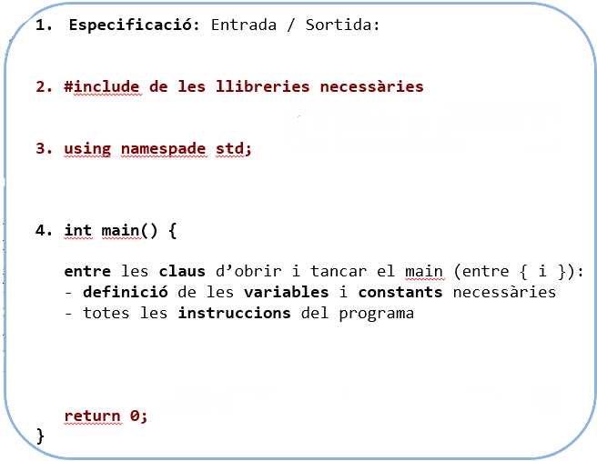

TIPUS ELEMENTALS DE DADES I INSTRUCCIONS BÀSIQUES
Estructura Seqüencial
- Cal declarar una variable abans d'utilitzar, és a dir, la declaració ha de ser anterior a la utilització.
- Abans d'utilitzar una variable declarada, cal que aquesta tingui un valor prèvi.
- El programa mai retrocedirà linies de codi, de manera que no hi ha forma de tornar a un estat "anterior". (Amb l'exepció dels bucles)
Cal posar link als bucles!!
Algorisme
Un algorisme és un conjunt d'instruccions per tal d'efectuar una tasca. Sovint això implica la modificació i tractament de les dades que té el programa, les quals defineixen una succeció d'estats que al final donaran un estat final.Tot algorisme està format per una especificació que està compost per dues condicions:
- Inicial: Informa com han de ser les dades d'entrada, si han de complir algun requisit. Exemple: no es permeten nombres negatius.
- Final: Informa de què ha fet el programa amb les dades, i quina serà la sortida si s'escau. Exemple: Suma les variables " a " i " b ", i en mostra el resultat.
Els algorismes són la part conceptual del que ha de fer el programa, un cop s'escriuen amb un llenguatge de programació s'obté un programa.
Pseudocodi
Tot pseudocodi ha de seguir les següents regles:
- Les instruccions han de ser precises. És a dir, una instrucció no pot ser ambigua o tenir diferents interpretacions.
- Cada pas ha de poder ser entès i executat. Una persona ha de ser capaç de fer manualment l'algorisme.
- L'algorisme en pseudocodi ha d'acabar.
Exemple 1:
Per dur a terme l'algorisme necessitem:
- El radi del cercle.
- La formula de l'àrea del quadrat més gran inscrit.
- Pensar com hauria de ser l'algorisme.
//Entrada: Llegeix un nombre real >= 0 que representa el radi (r) del cercle
//Sortida: Mostra per pantalla l'àrea del cercle i l'àrea del quadrat més gran inscrit.
algorisme Càlcul_arees
llegir el radi del cercle.
calcular àrea del cercle.
calcular l'àrea del quadrat més gran inscrit.
mostrar les àrees calculades.
fi algorisme
Per du a terme l'algorisme necessitem:
- Saber la quantitat inicial de segons.
- Saber la conversió de les unitats temporals
- Pensar l'algorisme
//Entrada: Llegeix un nombre natural que representa els segons (s).
//Sortida: Calcula el nombre de dies, hores, minuts i segons; equivalents a tots els segons (s). I els mostra per pantalla
algorisme Conversio_a_dies_hores_minuts_segons
llegir els segons inicials.
calcular el nombre de dies continguts en els segons inicials.
calcular el nombre d'hores continguts en els segons restants
calcular el nombre de minuts continguts en els segons restants
calcular els segons restants
mostrar tota la informació obtinguda
fi algorisme
Codi de programació
El programa que elaborem haurà de seguir la següent estructura: 
- 1. L'especificació no tindrà variació respecte a la que hem vist amb el pseudocodi.
- 2. Les llibreries necessàries com és el cas de iostream o cmath sempre es posen al principi de tot.
- 3. Usign namespace std; s'utilitza per definir que treballem amb un entorn estàndard.
- 4. Aqui és on comença el nostre codi, la funció main és la que executarà el nostre ordinador.
Exemple 1:
//Entrada: Llegeix un nombre real >= 0 que representa el radi (r) del cercle
//Sortida: Mostra per pantalla l'àrea del cercle i l'àrea del quadrat més gran inscrit.